Figure 4#
Behavioral features reliably define a dynamic choice variable revealing that, under occlusion, mice rapidly shift decision points to more informative viewpoints, correlating with better performance.#
For reference, here is the full figure
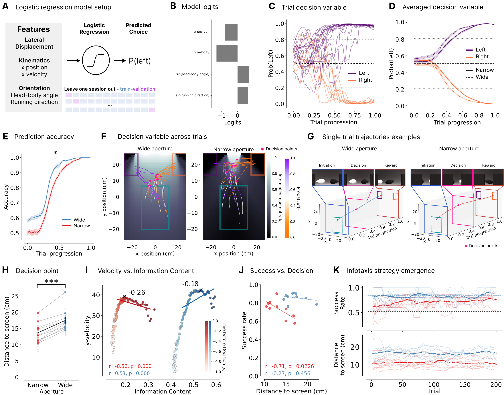
and corresponding supplemental figure
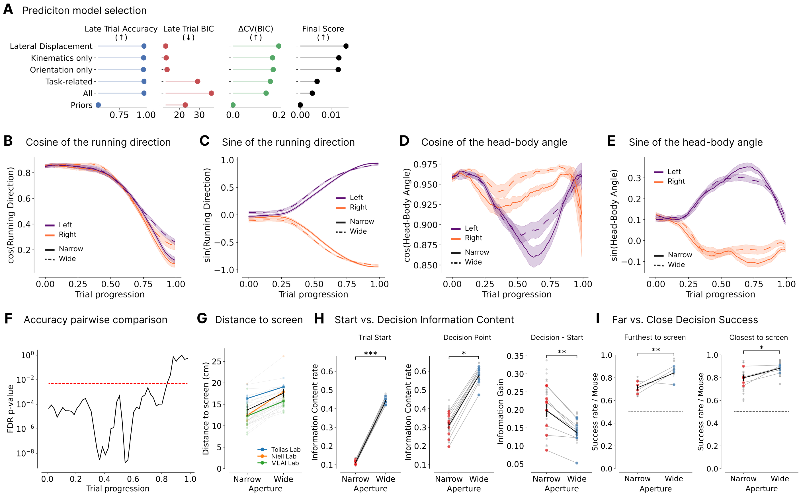
cd "/app/"
/app
/app/.venv/lib/python3.9/site-packages/IPython/core/magics/osm.py:417: UserWarning: using dhist requires you to install the `pickleshare` library.
self.shell.db['dhist'] = compress_dhist(dhist)[-100:]
%run env.py
%run run.py connect
import pandas as pd
import matplotlib.pyplot as plt
import matplotlib.colors as mcolors
import matplotlib.cm as cm
import seaborn as sns
import numpy as np
from vr4mice.analysis import plotting, regression, utils
from vr4mice.schema import base_analysis
from vr4mice.analysis.analysis import style
from vr4mice.schema.interpolated_trajectories import InterpolatedTrials
from vr4mice.schema.session_metrics import TrialMetrics
from vr4mice.schema.decision import PredictionModel, DecisionPoints, InclusionStatus, ExperimentMember, LabelSet, Label
from statsmodels.stats.anova import AnovaRM
from scipy.stats import ttest_ind
import scipy.stats as stats
from scipy.stats import pearsonr
from mpl_toolkits.axes_grid1 import make_axes_locatable
from scipy.spatial import ConvexHull
style()
save_fig_path = "notebooks/Paper_figures/Figure_output/"
/app/.venv/lib/python3.9/site-packages/tqdm/auto.py:21: TqdmWarning: IProgress not found. Please update jupyter and ipywidgets. See https://ipywidgets.readthedocs.io/en/stable/user_install.html
from .autonotebook import tqdm as notebook_tqdm
task_type_key = {"set_name": "contrast_white_target",
"stage_name": "dual_occlusion"}
sessions_list = list(
(InclusionStatus * ExperimentMember & {"included": 1} & task_type_key).fetch(
"dataset"
)
)
len(sessions_list)
43
# This takes a while to fetch because we need to fetch data for all trials
dataset_list = []
for d in sessions_list:
print(d)
try:
dataset_list.append(pd.DataFrame((InterpolatedTrials() & f'dataset = "{d}"').fetch(as_dict=True)[0]))
except Exception as err:
print(err, " dataset missing")
interpolated_df = pd.concat(dataset_list)
interpolated_df["mouse_name"] = interpolated_df.dataset.str.split("_").str[0]
31726_2025-03-18_1
31726_2025-03-19_1
31726_2025-03-20_1
31726_2025-03-21_1
31728_2025-03-07_1
31728_2025-03-20_1
31728_2025-03-21_1
J729_2024-11-30_1
J729_2024-12-01_1
J729_2024-12-02_1
J729_2024-12-03_1
J729_2024-12-04_1
J729_2024-12-10_1
J731_2024-12-05_1
Jacana_2024-08-13_1
Jacana_2024-08-14_1
Jacana_2024-08-15_1
Jacana_2024-08-16_1
Jacana_2024-08-19_1
Kiwi_2024-08-10_2
Kiwi_2024-08-11_4
Kiwi_2024-08-12_2
Kiwi_2024-08-13_1
Kiwi_2024-08-14_1
Lemming_2024-08-10_1
Lemming_2024-08-11_1
Lemming_2024-08-12_1
Lemming_2024-08-13_1
Nightingale_2024-08-10_1
Nightingale_2024-08-11_1
Nightingale_2024-08-12_1
Nightingale_2024-08-13_1
Nightingale_2024-08-14_1
Oribi_2024-08-16_1
Oribi_2024-08-19_1
Oribi_2024-08-20_1
Oribi_2024-08-21_1
Oribi_2024-08-22_1
Pheasant_2024-08-15_2
Pheasant_2024-08-16_1
Pheasant_2024-08-19_1
Pheasant_2024-08-20_1
Pheasant_2024-08-21_1
box_df = base_analysis.BoxDataFrame().get_data(key={"dataset": "Pheasant_2024-08-15_2"})
Regression variables traces#
mean_mouse = interpolated_df.groupby(
["dataset", "aperture", "trial_length"], as_index=False
).mean(numeric_only=True)
fig, ax = plt.subplots(2, 2, figsize=(12, 8))
ax = ax.flatten()
for (i, label), label_str in zip(enumerate(
["velocity_x_fliped", "velocity_y", "local_tortuosity", "distance_to_choice"]
), ["x velocity (cm/s)", "y velocity (cm/s)", "Local Tortuosity", "Distance to Port (cm)"]):
sns.lineplot(
data=mean_mouse,
x="trial_length",
y=label,
palette=(
plotting.colors_aperture[:2]
if len(mean_mouse.aperture.unique()) == 2
else "viridis"
),
hue="aperture",
errorbar="se",
ax=ax[i],
)
ax[i].set_ylabel(label_str)
ax[i].set_xlabel("Trial progression")
sns.despine(ax=ax[i], offset=10)
plt.tight_layout(pad=2)
plt.savefig(save_fig_path + "figure4_velocity_tortuosity_distance.svg", bbox_inches="tight", transparent=True)
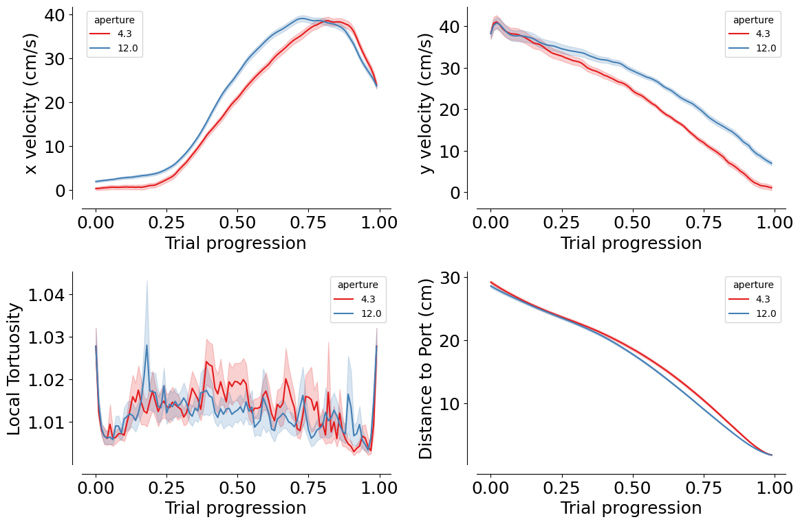
mean_mouse = interpolated_df.groupby(
["dataset", "aperture", "trial_left_choice", "trial_length"], as_index=False
).mean(numeric_only=True)
fig, ax = plt.subplots(1, 2, figsize=(10, 6))
ax = ax.flatten()
dash_styles = {
mean_mouse.aperture.unique()[0]: "", # Solid
mean_mouse.aperture.unique()[1]: (10, 10) # Dashed
}
for (i, label), label_str in zip(enumerate(["heading_dir", "head_angle"]),
["Running direction (°)", "Head-body angle (°)"]):
sns.lineplot(
data=mean_mouse,
x="trial_length",
y=label,
palette=plotting.colors_choice[::-1]
if len(mean_mouse.aperture.unique()) == 2
else "viridis",
hue="trial_left_choice"
if len(mean_mouse.aperture.unique()) == 2
else "aperture",
style=(
"aperture"
if len(mean_mouse.aperture.unique()) == 2
else "trial_left_choice"
),
errorbar="se",
dashes=dash_styles,
ax=ax[i],
)
ax[i].set_ylabel(label_str, fontsize=22)
ax[i].set_xlabel("Trial progression", fontsize=22)
sns.despine(ax=ax[i], offset=10)
ax[i].legend().remove()
plt.tight_layout(pad=2)
plt.savefig(save_fig_path + "figure4_heading_dir_head_angle.svg", bbox_inches="tight", transparent=True)
plt.savefig(save_fig_path + "figure4_heading_dir_head_angle.png", bbox_inches="tight", transparent=True, dpi=300)
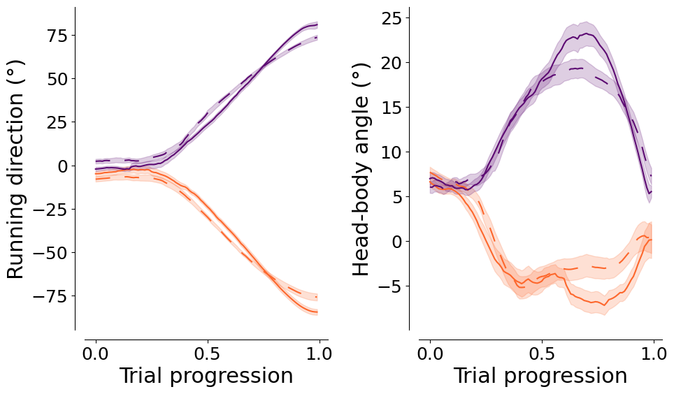
interpolated_df["mouse_name"] = interpolated_df.dataset.str.split("_").str[0]
interpolated_df["heading_dir_flipped"] = interpolated_df.heading_dir * interpolated_df.flip_one_side
interpolated_df["head_angle_flipped"] = interpolated_df.head_angle * interpolated_df.flip_one_side
fig, ax = plt.subplots(1, 2, figsize=(10, 6))
ax = ax.flatten()
sns.lineplot(
data=interpolated_df,
x="trial_length",
y="heading_dir_flipped",
hue="aperture",
errorbar="se",
palette=plotting.colors_aperture,
ax=ax[0],
)
ax[0].set_ylabel("Running direction (°)", fontsize=22)
ax[0].set_xlabel("Trial progression", fontsize=22)
sns.despine(ax=ax[0], offset=10)
ax[0].legend([], [], frameon=False)
sns.lineplot(
data=interpolated_df,
x="trial_length",
y="head_angle_flipped",
hue="aperture",
errorbar="se",
palette=plotting.colors_aperture,
ax=ax[1],
)
ax[1].set_ylabel("Head-body angle (°)", fontsize=22)
ax[1].set_xlabel("Trial progression", fontsize=22)
sns.despine(ax=ax[1], offset=10)
ax[1].legend([], [], frameon=False)
plt.tight_layout(pad=2)
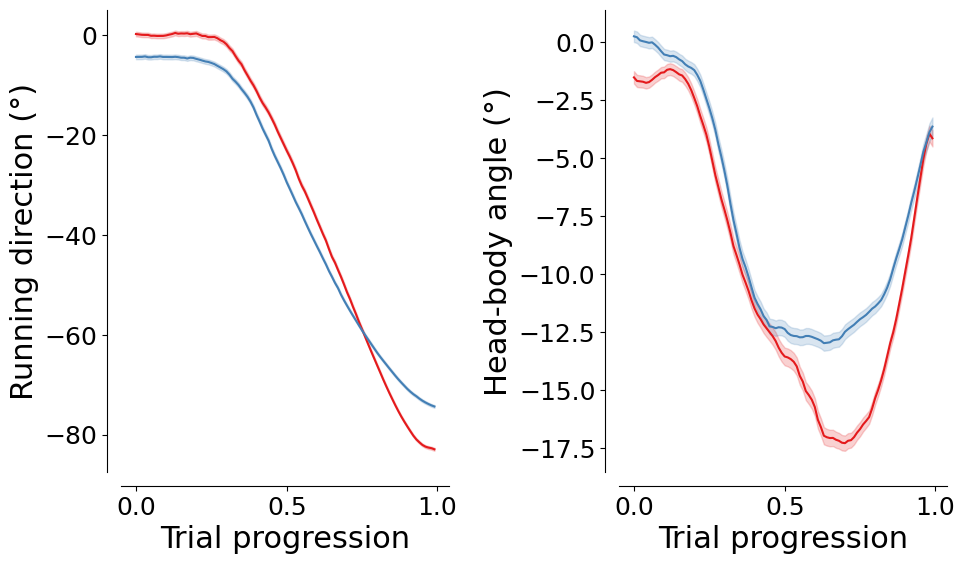
print(
AnovaRM(
data=interpolated_df.groupby(
["dataset", "aperture", "trial_length"], as_index=False
).mean(numeric_only=True),
depvar="heading_dir_flipped",
subject="dataset",
within=["aperture", "trial_length"],
).fit()
)
print(
AnovaRM(
data=interpolated_df.groupby(
["dataset", "aperture", "trial_length"], as_index=False
).mean(numeric_only=True),
depvar="head_angle_flipped",
subject="dataset",
within=["aperture", "trial_length"],
).fit()
)
Anova
========================================================
F Value Num DF Den DF Pr > F
--------------------------------------------------------
aperture 19.0607 1.0000 42.0000 0.0001
trial_length 1344.4308 99.0000 4158.0000 0.0000
aperture:trial_length 33.5446 99.0000 4158.0000 0.0000
========================================================
Anova
======================================================
F Value Num DF Den DF Pr > F
------------------------------------------------------
aperture 30.9574 1.0000 42.0000 0.0000
trial_length 92.5524 99.0000 4158.0000 0.0000
aperture:trial_length 5.8329 99.0000 4158.0000 0.0000
======================================================
agg = (
interpolated_df
.groupby(["dataset", "aperture", "trial_length"], as_index=False)[
["heading_dir_flipped", "head_angle_flipped"]
]
.mean(numeric_only=True)
)
aperture_order = sorted(agg.aperture.unique())
p_values = []
for tl in sorted(agg.trial_length.unique()):
section = agg[agg.trial_length == tl]
t = ttest_ind(
section[section.aperture == aperture_order[0]].heading_dir_flipped,
section[section.aperture == aperture_order[1]].heading_dir_flipped,
)
p_values.append({"segment": tl, "p_value": t.pvalue})
p_value_df = pd.DataFrame(p_values)
p_value_df["p_value_corr"] = stats.false_discovery_control(p_value_df.p_value)
fig, ax = plt.subplots(1, 1, figsize=(6, 5))
plt.plot(p_value_df.segment, p_value_df.p_value_corr, c="k")
plt.hlines(0.05, xmin=0, xmax=1, color="red", linestyle="dashed")
plt.xlabel("Trial progression")
plt.ylabel("FDR p-value")
plt.yscale("log")
sns.despine(offset=10)
plt.savefig(save_fig_path + "figure4_heading_dir_p_values.svg", bbox_inches="tight", transparent=True)
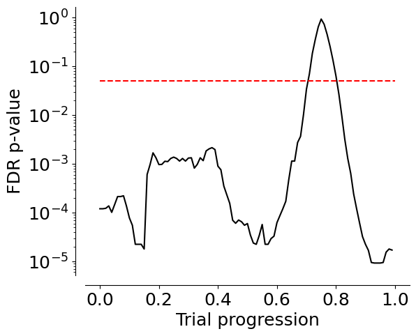
aperture_order = sorted(agg.aperture.unique())
p_values = []
for tl in sorted(agg.trial_length.unique()):
section = agg[agg.trial_length == tl]
t = ttest_ind(
section[section.aperture == aperture_order[0]].head_angle_flipped,
section[section.aperture == aperture_order[1]].head_angle_flipped,
)
p_values.append({"segment": tl, "p_value": t.pvalue})
p_value_df = pd.DataFrame(p_values)
p_value_df["p_value_corr"] = stats.false_discovery_control(p_value_df.p_value)
fig, ax = plt.subplots(1, 1, figsize=(6, 5))
plt.plot(p_value_df.segment, p_value_df.p_value_corr, c="k")
plt.hlines(0.05, xmin=0, xmax=1, color="red", linestyle="dashed")
plt.xlabel("Trial progression")
plt.ylabel("FDR p-value")
plt.yscale("log")
sns.despine(offset=10)
plt.savefig(save_fig_path + "figure4_head_angle_p_values.svg", bbox_inches="tight", transparent=True)
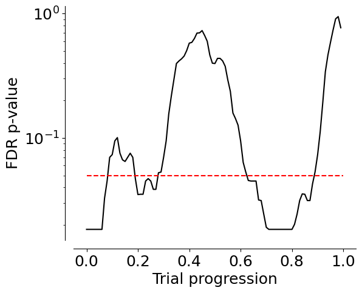
mean_mouse = interpolated_df.groupby(
["dataset", "aperture", "trial_left_choice", "trial_length"], as_index=False
).mean(numeric_only=True)
fig, ax = plt.subplots(2, 2, figsize=(12, 8))
ax = ax.flatten()
dash_styles = {
mean_mouse.aperture.unique()[0]: "", # Solid
mean_mouse.aperture.unique()[1]: (5, 5) # Dashed
}
for (i, label), label_str in zip(enumerate(
["heading_dir_cos", "heading_dir_sin", "head_angle_cos", "head_angle_sin"]
), ["cos(Running Direction)", "sin(Running Direction)", "cos(Head-Body Angle)", "sin(Head-Body Angle)"]):
sns.lineplot(
data=mean_mouse,
x="trial_length",
y=label,
palette=plotting.colors_choice[::-1]
if len(mean_mouse.aperture.unique()) == 2
else "viridis",
hue="trial_left_choice"
if len(mean_mouse.aperture.unique()) == 2
else "aperture",
style=(
"aperture"
if len(mean_mouse.aperture.unique()) == 2
else "trial_left_choice"
),
dashes=dash_styles,
errorbar="se",
ax=ax[i],
)
ax[i].set_ylabel(label_str)
ax[i].set_xlabel("Trial progression")
sns.despine(ax=ax[i], offset=10)
plt.tight_layout(pad=2)
plt.savefig(save_fig_path + "figure4_heading_dir_head_angle_cos_sin.svg", bbox_inches="tight", transparent=True)
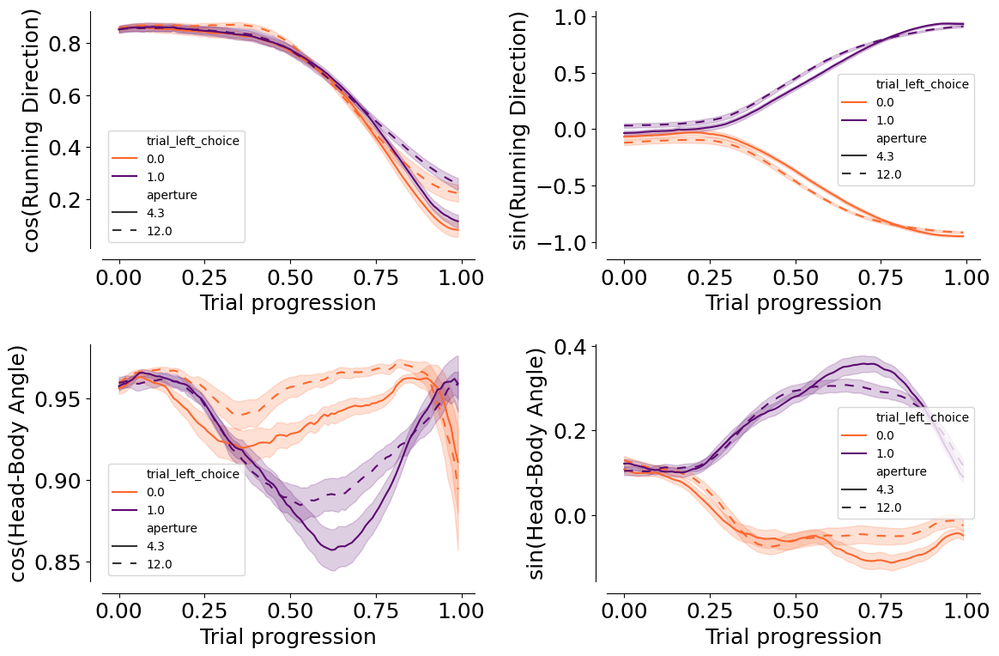
Prediction model#
model_key = {"label_set_id": 8, "params_id": 1}
# Coefficients for dual occluder task
coef = (PredictionModel() & model_key & task_type_key).fetch1("coefficients")
# Logits of the regression
model_labels, clean_labels = (LabelSet.Member * Label & model_key).fetch("label_key", "clean_name")
fig, ax = plt.subplots(1, 1, figsize=(2, 5))
ax.barh(
model_labels,
np.mean(coef[:, 1:], axis=0),
yerr=stats.sem(coef[:, 1:], axis=0),
color="#7C7C7C",
)
sns.despine(offset=10, ax=ax)
ax.set_yticks(np.arange(len(model_labels)))
ax.set_yticklabels(clean_labels, rotation=0, ha="right", fontsize=15)
ax.set_xlabel("Logits")
ax.set_ylabel("Features")
plt.savefig(save_fig_path + "figure4_model_logits.svg", transparent=False)
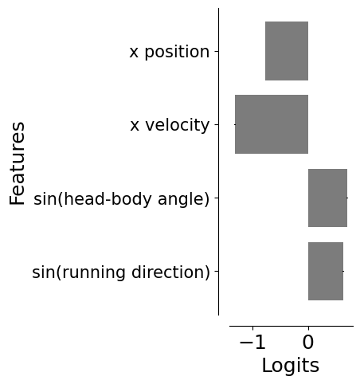
prediction_df = pd.DataFrame((PredictionModel().SessionPrediction() & model_key & task_type_key).fetch(
"dataset", "trial", "proba_left", "accuracy", "trial_length", as_dict=True)).explode(["trial", "proba_left", "accuracy", "trial_length"])
df_model = prediction_df.merge(
interpolated_df[["dataset", "trial_length", "trial", "aperture", "trial_left_choice", "x", "y"]], on=["dataset", "trial", "trial_length"]
)
df_model["accuracy"] = df_model["accuracy"].astype(float)
df_model["proba_left"] = df_model["proba_left"].astype(float)
fig, ax = plt.subplots(1, 1, figsize=(5, 5))
group = df_model[(df_model.dataset == "Kiwi_2024-08-14_1")]
trials = [
94,
15,
66,
170,
224,
195,
56,
203,
88,
239,
113,
91,
186,
248,
109,
164,
188,
60,
229,
182,
156,
197,
52,
45,
]
group = group[group.trial.isin(np.array(trials))]
sns.lineplot(
data=group,
x="trial_length",
y="proba_left",
hue="trial_left_choice",
errorbar=None,
estimator=None,
units="trial",
palette=plotting.colors_choice[::-1],
sort=False,
alpha=0.5,
ax=ax,
)
ax.set_ylabel("Prob(Left)")
ax.set_xlabel("Trial progression")
ax.legend([], [], frameon=False)
sns.despine(offset=10)
plt.savefig(
save_fig_path + "figure4_dynamic_decision_variable.svg",
transparent=True,
)
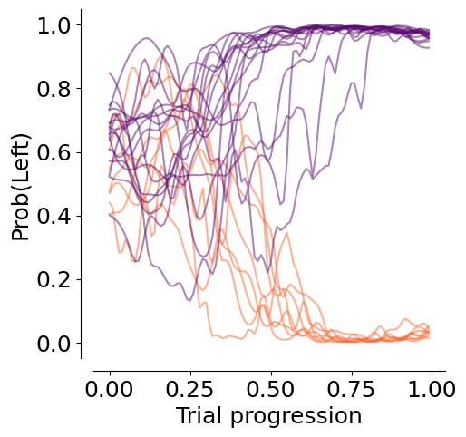
df_model_mean = df_model.groupby(["dataset", "aperture", "trial_left_choice", "trial_length"], as_index=False).mean()
fig, ax = plt.subplots(1, 1, figsize=(5, 5))
dash_styles = {
mean_mouse.aperture.unique()[0]: "", # Solid
mean_mouse.aperture.unique()[1]: (10, 10) # Dashed
}
sns.lineplot(
data=df_model_mean,
x="trial_length",
y="proba_left",
hue="trial_left_choice",
style="aperture",
palette=plotting.colors_choice[::-1],
sort=False,
alpha=1,
ax=ax,
errorbar="se",
dashes=dash_styles
)
ax.set_ylabel("Proba(Left)")
ax.set_xlabel("Trial progression")
ax.hlines(0.5, xmin=0, xmax=1, colors="black", linestyles="dashed")
ax.hlines(0.8, xmin=0, xmax=1, colors="gray", linestyles="dotted")
ax.hlines(0.2, xmin=0, xmax=1, colors="gray", linestyles="dotted")
ax.legend([], [], frameon=False)
sns.despine(offset=10)
plt.savefig(
save_fig_path + "figure4_dynamic_decision_variable_avg.png",
transparent=True,
dpi=300,
)
plt.savefig(
save_fig_path + "figure4_dynamic_decision_variable_avg.svg",
transparent=True,
)
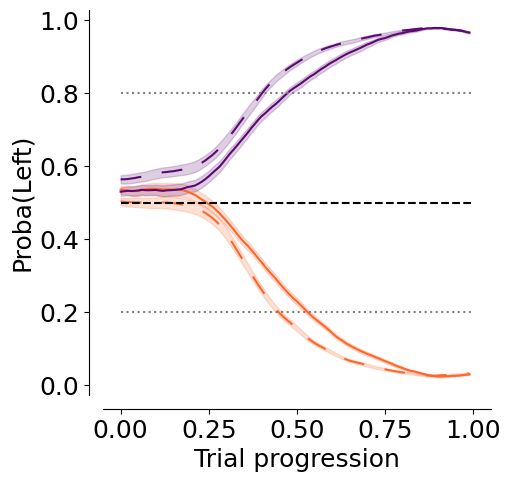
df_model_mean = df_model.groupby(["dataset", "aperture", "trial_length"], as_index=False).mean()
fig, ax = plt.subplots(1, 1, figsize=(4, 5))
sns.lineplot(
data=df_model_mean,
x="trial_length",
y="accuracy",
hue="aperture",
palette=plotting.colors_aperture,
sort=False,
alpha=1,
ax=ax,
errorbar="se"
)
ax.hlines(0.5, 0, 1, color="black", linestyle="--")
ax.set_ylabel("Accuracy")
ax.set_xlabel("Trial progression")
ax.legend([], [], frameon=False)
sns.despine(offset=10)
plt.savefig(
save_fig_path + "figure4_model_accuracy.svg", transparent=True
)
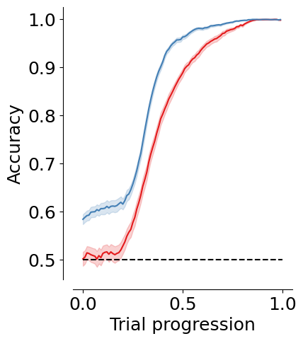
df_model["trial_length_bin"] = pd.cut(
df_model["trial_length"], bins=50
)
df_anova = df_model.groupby(
["dataset", "aperture", "trial_length_bin"], as_index=False
)["accuracy"].mean()
print(
AnovaRM(
data=df_anova,
depvar="accuracy",
subject="dataset",
within=["aperture", "trial_length_bin"],
).fit()
)
Anova
============================================================
F Value Num DF Den DF Pr > F
------------------------------------------------------------
aperture 51.7532 1.0000 42.0000 0.0000
trial_length_bin 1110.6243 49.0000 2058.0000 0.0000
aperture:trial_length_bin 16.5970 49.0000 2058.0000 0.0000
============================================================
p_values = []
for i in df_anova.trial_length_bin.unique():
section = df_anova[df_anova.trial_length_bin == i]
t = ttest_ind(
section[section.aperture == section.aperture.unique()[0]].accuracy,
section[section.aperture == section.aperture.unique()[1]].accuracy,
)
p_values.append(pd.DataFrame({"segment": i, "p_value": t.pvalue}, index=[0]))
p_value_df = pd.concat(p_values)
p_value_df["p_value_corr"] = stats.false_discovery_control(p_value_df.p_value)
# Convert interval bins to numeric midpoints
p_value_df["segment"] = p_value_df["segment"].apply(lambda x: x.mid)
plt.plot(p_value_df.segment, p_value_df.p_value_corr, c="k")
plt.hlines(
0.005,
xmin=p_value_df.segment.min(),
xmax=p_value_df.segment.max(),
color="red",
linestyle="dashed",
)
plt.xlabel("Trial progression")
plt.ylabel("FDR p-value")
plt.yscale("log")
sns.despine(offset=10)
plt.savefig(
save_fig_path + "figure4_model_accuracy_pvalue.svg", transparent=True
)
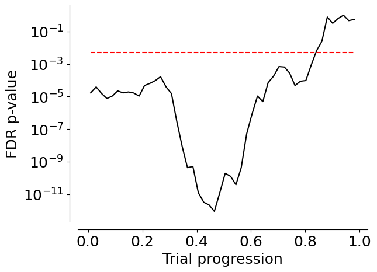
Comparison to other models (BIC analysis)#
fig, ax = plt.subplots(2, 4, figsize=(30, 15))
for label_set_id, axis in zip(range(1, 9), ax.flatten()):
model_labels, clean_labels, label_set_name = (
LabelSet.Member * Label * LabelSet & f"label_set_id='{label_set_id}'").fetch(
"label_key", "clean_name", "label_set_name")
if "Best Task-related" in label_set_name:
label_set_name = ["Lateral Displacement" for _ in model_labels]
coef = (PredictionModel() & dict({'label_set_id': label_set_id,
"params_id":1}, **task_type_key)).fetch1("coefficients")
axis.barh(
model_labels,
np.mean(coef[:, 1:], axis=0),
yerr=stats.sem(coef[:, 1:], axis=0),
color="#7C7C7C",
)
sns.despine(offset=10, ax=axis)
axis.set_yticks(np.arange(len(model_labels)))
axis.set_yticklabels(clean_labels, rotation=0, ha="right", fontsize=15)
axis.set_xlabel("Logits")
axis.set_ylabel("Features")
axis.set_title(f"{label_set_name[0]}", fontsize=18)
plt.tight_layout(pad=2.0)
plt.savefig(save_fig_path + "figure4_all_model_logits.svg", transparent=False)
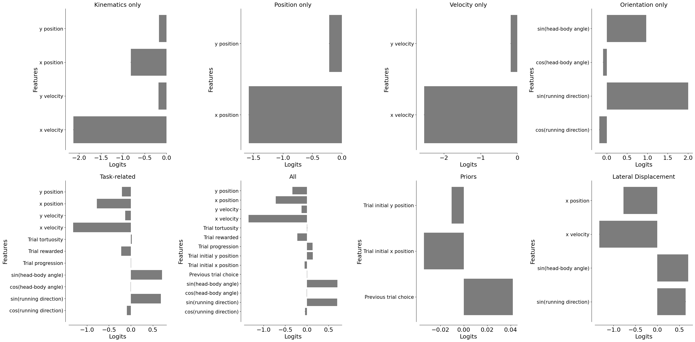
pred_all = pd.DataFrame((PredictionModel().SessionPrediction() & task_type_key & {"params_id":1}).fetch(as_dict=True)).explode(["trial", "proba_left", "accuracy", "trial_length", "bic", "trial_left_choice"])
pred_all["bic"] = pred_all["bic"].astype(float)
pred_all["accuracy"] = pred_all["accuracy"].astype(float)
# Define bins and labels
bins = [0, 0.5, 1.0]
labels = ['0.0-0.5', '0.5-1.0']
pred_all['length_interval'] = pd.cut(pred_all['trial_length'], bins=bins, labels=labels, include_lowest=True)
pred_all["coef_var_bic"] = pred_all.groupby(["label_set_id", "trial", "length_interval"])["bic"].transform(lambda x: x.std() / x.mean())
summary_df = pd.merge(pred_all.groupby(["label_set_id", "length_interval"])[["coef_var_bic",
"accuracy",
"bic",]].mean(),
pd.DataFrame(LabelSet().fetch()).set_index("label_set_id"), left_index=True, right_index=True)
summary_df["label_set_name"] = summary_df.label_set_name.str.replace("Best Task-related", "Lateral Displacement")
summary_df = summary_df.unstack(level=-1)
summary_df["diff_bic"] = summary_df["bic"]["0.0-0.5"] - summary_df["bic"]["0.5-1.0"]
accuracy_05_10 = summary_df[("accuracy", "0.5-1.0")]
bic_05_10 = summary_df[("bic", "0.5-1.0")]
delta_cv = (summary_df[("coef_var_bic", "0.5-1.0")] - summary_df[("coef_var_bic", "0.0-0.5")])
s_score = (accuracy_05_10 / bic_05_10) * (-delta_cv)
s_score = s_score.replace([np.inf, -np.inf], np.nan)
s_df = pd.DataFrame({
"label_set_name": summary_df[("label_set_name", "0.0-0.5")],
"accuracy_0.5-1.0": accuracy_05_10,
"bic_0.5-1.0": bic_05_10,
"delta_cv": delta_cv,
"score": s_score,
}).sort_values("score", ascending=False)
s_df
| label_set_name | accuracy_0.5-1.0 | bic_0.5-1.0 | delta_cv | score | |
|---|---|---|---|---|---|
| label_set_id | |||||
| 8 | Lateral Displacement | 0.980987 | 13.092029 | -0.198192 | 1.485054e-02 |
| 1 | Kinematics only | 0.977062 | 13.391716 | -0.171835 | 1.253708e-02 |
| 3 | Velocity only | 0.967327 | 9.536206 | -0.121486 | 1.232320e-02 |
| 4 | Orientation only | 0.975070 | 13.808917 | -0.173832 | 1.227457e-02 |
| 5 | Task-related | 0.981135 | 29.165043 | -0.161736 | 5.440912e-03 |
| 6 | All | 0.980864 | 36.082923 | -0.143414 | 3.898510e-03 |
| 7 | Priors | 0.554389 | 22.975909 | 0.000001 | -2.585972e-08 |
| 2 | Position only | 0.935537 | 11.912853 | 0.009489 | -7.452153e-04 |
plot_df = s_df.sort_values("score", ascending=True) # Sort for ranking
plot_df = plot_df[plot_df.label_set_name.isin([
"Lateral Displacement", "All", "Kinematics only", "Task-related", "Priors", "Orientation only"
])]
fig, axes = plt.subplots(1, 4, figsize=(10, 3), sharey=True)
metrics = ["accuracy_0.5-1.0", "bic_0.5-1.0", "delta_cv", "score"]
titles = ["Late Accuracy (↑)", "Late BIC (↓)", "$\Delta$CV(BIC) (↓)", "Final Score (↑)"]
colors = ["#4C72B0", "#C44E52", "#55A868", "black"]
for i, (ax, col, title, color) in enumerate(zip(axes, metrics, titles, colors)):
ax.scatter(plot_df[col], plot_df["label_set_name"], color=color, s=100, zorder=3)
# Padding based on data range
data_min = plot_df[col].min()
data_max = plot_df[col].max()
data_range = data_max - data_min
padding = data_range * 0.1
if col == "delta_cv":
ax.hlines(y=plot_df["label_set_name"], xmin=plot_df[col], xmax=0,
color=color, alpha=0.3, linewidth=2)
else:
ax.hlines(y=plot_df["label_set_name"], xmin=plot_df[col].min() - padding, xmax=plot_df[col],
color=color, alpha=0.3, linewidth=2)
ax.set_xlim(plot_df[col].min() - padding, plot_df[col].max() + padding)
ax.set_xlabel(title, fontsize=16)
ax.set_yticks(np.arange(len(plot_df["label_set_name"])))
ax.set_yticklabels(plot_df["label_set_name"], fontsize=16)
plt.tight_layout()
sns.despine(left=True, bottom=False)
plt.savefig(save_fig_path + "figure4_BIC_model_comparison.svg", transparent=True, bbox_inches="tight")
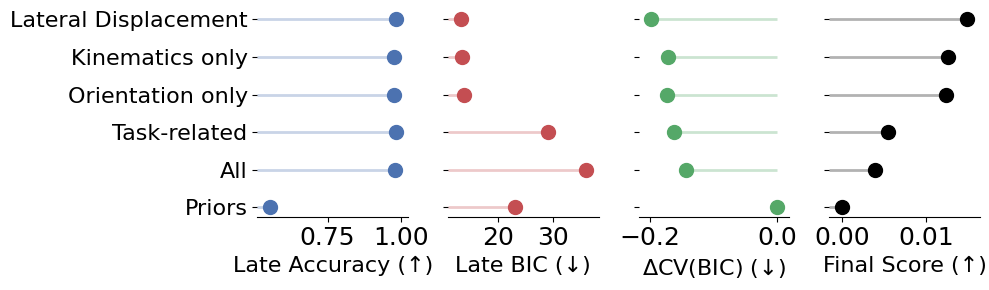
Decision point analysis#
Select the threshold based on change in kinematics#
session_to_plot = "Pheasant_2024-08-15_2"
threshold_values = [0.1, 0.2, 0.3, 0.4, 0.5]
threshold_keys = [{'threshold_uncertainty': val} for val in threshold_values]
all_decision_points = pd.DataFrame((DecisionPoints() & task_type_key & model_key).fetch(as_dict=True))
all_decision_points = all_decision_points.explode(["trial", "aperture", "trial_length", "trial_left_choice", "proba_left", "x", "y", "trial_rewarded"])
all_decision_points["mouse_name"] = all_decision_points.dataset.str.split("_").str[0]
all_decision_points.dropna(subset=["y"], inplace=True)
all_decision_points["distance_to_screen"] = np.abs(all_decision_points["y"] - 27)
# Compare metrics before vs after to select the best threshold for defining decision points
decision_window = 10
eval_df_norm = regression.select_threshold(all_decision_points, interpolated_df, decision_window=decision_window)
Analyzing decision points with threshold_uncertainty 0.5 (normalized)...
Analyzing decision points with threshold_uncertainty 0.4 (normalized)...
Analyzing decision points with threshold_uncertainty 0.3 (normalized)...
Analyzing decision points with threshold_uncertainty 0.2 (normalized)...
Analyzing decision points with threshold_uncertainty 0.1 (normalized)...
Analyzing decision points with threshold_uncertainty 0.0 (normalized)...
mean_eval_df_norm = eval_df_norm.groupby("threshold", as_index=False).mean(numeric_only=True)
plot_df = mean_eval_df_norm.sort_values("jump_score_norm", ascending=True)
fig, axes = plt.subplots(1, 5, figsize=(10, 2), sharey=True)
metrics = ["z_vx", "z_vy", "z_ang", "z_dir", "jump_score_norm"]
titles = ["$\Delta$x-velocity\n(↑)", "$\Delta$y-velocity\n(↓)", "$\Delta$Head angle\n(↑)", "$\Delta$Running direction\n(↑)", "Turning Score\n(↑)"]
colors = ["#4C72B0", "#C44E52", "#55A868", "#8C564B", "black"]
for i, (ax, col, title, color) in enumerate(zip(axes, metrics, titles, colors)):
# Plot dots
ax.scatter(plot_df[col], plot_df["threshold"], color=color, s=60, zorder=3)
# Add horizontal lines for readability
ax.hlines(y=plot_df["threshold"], xmin=plot_df[col].min(), xmax=plot_df[col],
color=color, alpha=0.3, linewidth=2)
ax.set_title(title, fontsize=12)
ax.set_yticks(plot_df["threshold"])
ax.set_yticklabels(plot_df["threshold"], fontsize=14)
# Get the existing x-axis ticks and just chage the size
ticks = ax.get_xticks()
ax.set_xticks(ticks, minor=False)
ax.set_xticklabels([f"{tick:.1f}" for tick in ticks], fontsize=14)
ax.set_ylim(-0.5, 4.5)
plt.tight_layout()
sns.despine(left=True, bottom=False)
plt.savefig(save_fig_path + "figure4_decision_point_threshold_comparison.svg", transparent=True, bbox_inches="tight")
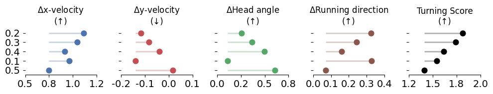
all_decision_points.dropna(subset=["y"], inplace=True)
all_decision_points["distance_to_screen"] = np.abs(all_decision_points["y"] - 27)
filtered_df = all_decision_points[all_decision_points["aperture"].isin([4.3, 12.0])]
grouped = filtered_df.groupby(["mouse_name", "dataset", "threshold_uncertainty", "aperture"])["distance_to_screen"].mean().unstack("aperture")
grouped["diff"] = grouped[12.0] - grouped[4.3]
result_df = grouped.reset_index()
Threshold selected: 0.2, the rest is with that threshold#
decision_points = pd.DataFrame((DecisionPoints() & task_type_key & model_key & "threshold_uncertainty = 0.2").fetch(as_dict=True))
decision_points = decision_points.explode(["trial", "aperture", "trial_length", "trial_left_choice", "proba_left", "x", "y", "trial_rewarded"])
decision_points["mouse_name"] = decision_points.dataset.str.split("_").str[0]
decision_points["distance_to_screen"] = np.abs(decision_points["y"].astype(float) - 27)
fig = plt.figure(figsize=(10, 10))
ax = fig.add_subplot(111, projection='3d')
ax = plotting.plot_session_3d(
df=interpolated_df[interpolated_df.dataset == session_to_plot],
box_df=box_df,
trial_ids=[69],
ax=ax,
color_by_aperture=True,
color_by_choice=False,
decision_points=decision_points[decision_points.dataset == session_to_plot]
)
plt.show()
plt.savefig(save_fig_path + "figure4_3d_trajectory_wide.svg", bbox_inches="tight", transparent=True)
Decision Time: 0.37
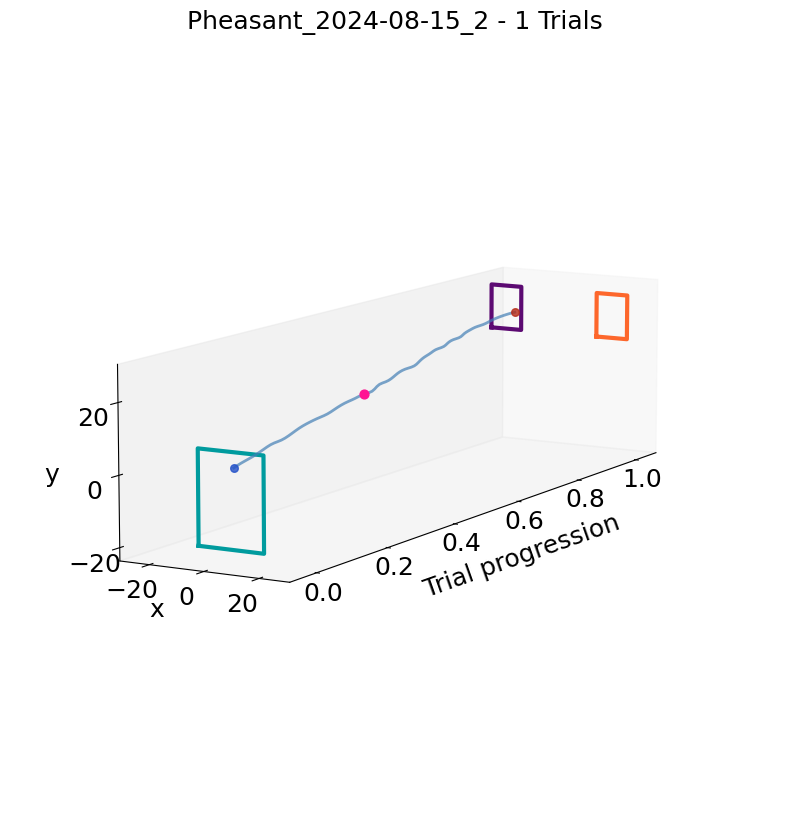
<Figure size 640x480 with 0 Axes>
fig = plt.figure(figsize=(10, 10))
ax = fig.add_subplot(111, projection='3d')
ax = plotting.plot_session_3d(
df=interpolated_df[interpolated_df.dataset == session_to_plot],
box_df=box_df,
trial_ids=[125],
ax=ax,
color_by_aperture=True,
color_by_choice=False,
decision_points=decision_points[decision_points.dataset == session_to_plot]
)
plt.show()
plt.savefig(save_fig_path + "figure4_3d_trajectory_narrow.svg", bbox_inches="tight", transparent=True)
Decision Time: 0.45
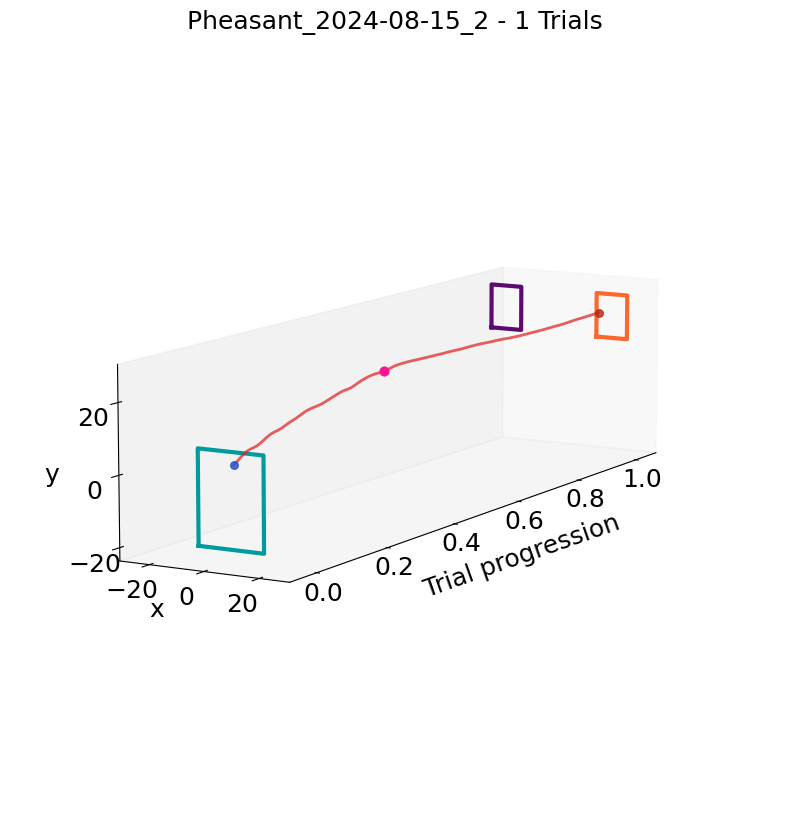
<Figure size 640x480 with 0 Axes>
with open("information_maps/info_maps/info_matrix_unnormalized_12.3w.npy", "rb") as file:
info_matrix_narrow = np.rot90(np.load(file), k=1)
with open("information_maps/info_maps/info_matrix_unnormalized_34.6w.npy", "rb") as file:
info_matrix_wide = np.rot90(np.load(file), k=1)
info_matrices = [info_matrix_narrow, info_matrix_wide]
# normalize across both maps to max 1
max_value = max(im.max() for im in info_matrices)
info_matrices = [im / max_value for im in info_matrices]
fig, ax = plt.subplots(
1, len(df_model.aperture.unique()), figsize=(9, 5), constrained_layout=True
)
decision_color = "deeppink"
session_to_plot = "Pheasant_2024-08-15_2"
trials = [44, 45, 19, 62, 61, 45, 85, 41, 43, 41, 50, 75, 24, 69, 84, 74, 10] + [
63,
30,
78,
47,
33,
5,
17,
9,
47,
30,
99,
11,
12,
15,
]
# Start from PuOr
base_cmap = cm.get_cmap("PuOr")
# Make a brighter version by rescaling luminance
def brighten(cmap, factor=3):
colors = cmap(np.linspace(0, 1, 256))
rgb = mcolors.rgb_to_hsv(colors[:, :3])
rgb[:, 2] = rgb[:, 2] * factor # brighten value channel
rgb[:, 2] = np.clip(rgb[:, 2], 0, 1)
colors[:, :3] = mcolors.hsv_to_rgb(rgb)
return mcolors.ListedColormap(colors)
bright_puor = brighten(base_cmap)
for i, aperture in enumerate(df_model.aperture.unique()):
regression.plot_decision_points_on_trajectory(
df_model[
(df_model.dataset == session_to_plot) & (df_model.aperture == aperture)
],
box_df,
decision_point=decision_points[
(decision_points.dataset == session_to_plot)
& (decision_points.aperture == aperture)
],
color=decision_color,
trials=trials,
ax=ax[i],
cmap=bright_puor,
)
im = ax[i].imshow(info_matrices[::-1][i],
cmap="bone",
extent=[-27, 27, -27, 27],
zorder=-10)
ax[i].set_xlim(-27, 27)
ax[i].set_ylim(-27, 27)
ax[i].set_aspect(1.4)
ax[i].set_xlabel("x position (cm)")
sns.despine(offset=10, ax=ax[i])
ax[0].set_ylabel("y position (cm)")
ax[1].set_ylabel("")
plt.savefig(
save_fig_path + "figure4_decision_points_trajectories_bright.svg",
transparent=True,
)
/tmp/ipykernel_3229955/2512967155.py:26: MatplotlibDeprecationWarning: The get_cmap function was deprecated in Matplotlib 3.7 and will be removed in 3.11. Use ``matplotlib.colormaps[name]`` or ``matplotlib.colormaps.get_cmap()`` or ``pyplot.get_cmap()`` instead.
base_cmap = cm.get_cmap("PuOr")
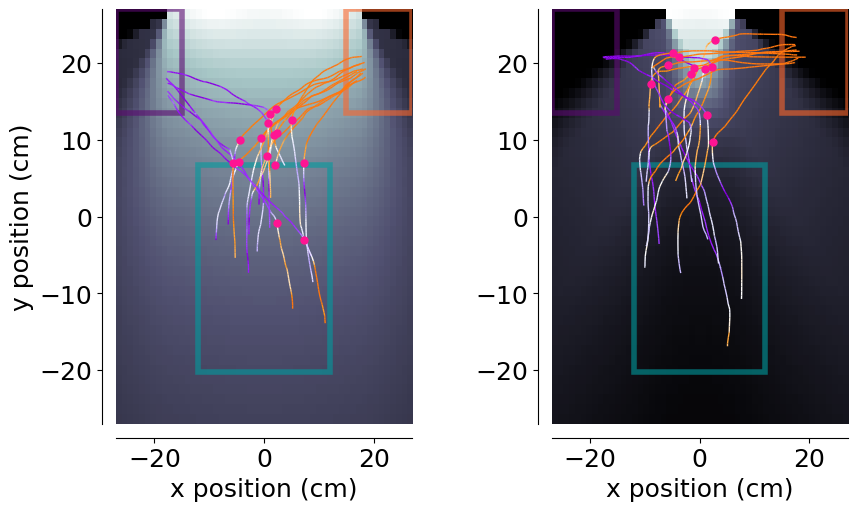
Velocity aligned on the decision point#
def get_info_at_position(info_matrix, position):
# Assuming info_matrix is a 2D numpy array and position is a tuple (x, y)
x, y = position
# Convert position to matrix indices
x_idx = int(x + 27)
y_idx = int(y + 27)
# but the matrix is 52x42 so the positions need to be scaled down
x_idx_norm = int(x_idx * (51 / 54))
y_idx_norm = int(y_idx * (41 / 54))
y_idx_norm = info_matrix.shape[0] - 1 - y_idx_norm
return info_matrix[y_idx_norm, x_idx_norm] # Note: y comes first in matrix indexing
# Compute information for each timepoint in interpolated_df
interpolated_df["info_gain"] = interpolated_df.apply(
lambda row: get_info_at_position(
info_matrices[0] if row.aperture == 4.3 else info_matrices[1],
(row.x, row.y),
),
axis=1,
)
decision_points.dropna(subset=["x", "y"], inplace=True)
decision_points["info_gain"] = decision_points.apply(
lambda row: get_info_at_position(
info_matrices[0] if row.aperture == 4.3 else info_matrices[1],
(row.x, row.y),
),
axis=1,
)
# Convert to sec
interpolated_df["time_in_sec"] = interpolated_df["trial_length"] * interpolated_df["trial_duration"]
durations = interpolated_df[["dataset", "trial", "trial_duration"]].drop_duplicates()
decision_points = decision_points.merge(durations, on=["dataset", "trial"], how="left")
decision_points["time_in_sec"] = decision_points["trial_length"] * decision_points["trial_duration"]
interpolated_df["distance_to_screen"] = np.abs(interpolated_df["y"] - 27)
# Average velocity/info_gain around decision point
bin_size = 0.01
pre_window = 1.0
post_window = 0.02
dp_all = decision_points[["dataset", "aperture", "trial", "time_in_sec"]].rename(
columns={"time_in_sec": "decision_tl"}
)
df_all = interpolated_df.merge(
dp_all,
on=["dataset", "aperture", "trial"],
how="inner",
).copy()
df_all["t_rel"] = df_all["time_in_sec"] - df_all["decision_tl"]
df_all = df_all[(df_all.t_rel >= -pre_window) & (df_all.t_rel <= post_window)]
bins = np.arange(-pre_window, post_window + bin_size, bin_size)
df_all["t_bin"] = pd.cut(df_all.t_rel, bins=bins, labels=bins[:-1])
def _bin_mean_sem(frame, value_col):
binned = (
frame.groupby(["aperture", "t_bin"])[value_col]
.agg(["mean", "sem"])
.reset_index()
)
binned["t_bin"] = binned["t_bin"].astype(float)
return binned
metrics = [
{
"col": "velocity_y",
"ylabel": "Mean y-velocity",
"file": "figure4_velocity_around_decision.svg",
},
{
"col": "velocity_x_fliped",
"ylabel": "Mean x-velocity",
"file": "figure4_velocity_x_around_decision.svg",
},
{
"col": "info_gain",
"ylabel": "Mean info gain",
"file": "figure4_info_gain_around_decision.svg",
},
]
binned_by_metric = {}
for metric in metrics:
value_col = metric["col"]
binned = _bin_mean_sem(df_all, value_col)
binned_by_metric[value_col] = binned
fig, axes = plt.subplots(1, 2, figsize=(12, 4), sharex=True)
# Overall
overall = (
df_all.groupby("t_bin")[value_col]
.agg(["mean", "sem"])
.reset_index()
)
overall["t_bin"] = overall["t_bin"].astype(float)
axes[0].plot(overall.t_bin, overall["mean"], color="black", linewidth=1.5)
axes[0].fill_between(
overall.t_bin,
overall["mean"] - overall["sem"],
overall["mean"] + overall["sem"],
color="black",
alpha=0.2,
linewidth=0,
)
axes[0].axvline(0, color="black", linestyle=":", linewidth=2)
axes[0].set_title("All apertures")
axes[0].set_ylabel(metric["ylabel"])
axes[0].set_xlabel("Time rel. to decision (sec)")
sns.despine(ax=axes[0])
# By aperture
for idx, ap in enumerate(sorted(df_all.aperture.unique())[:2]):
ap_df = binned[binned.aperture == ap]
color = plotting.colors_aperture[idx] if "plotting" in globals() else None
axes[1].plot(ap_df.t_bin, ap_df["mean"], color=color, linewidth=1.5, label=f"Aperture {ap}")
axes[1].fill_between(
ap_df.t_bin,
ap_df["mean"] - ap_df["sem"],
ap_df["mean"] + ap_df["sem"],
color=color,
alpha=0.2,
linewidth=0,
)
axes[1].axvline(0, color="black", linestyle=":", linewidth=2)
axes[1].set_title("By aperture")
axes[1].set_xlabel("Time rel. to decision (sec)")
axes[1].set_ylabel(metric["ylabel"])
sns.despine(ax=axes[1])
plt.tight_layout()
sns.despine(offset=10)
plt.savefig(save_fig_path + metric["file"])
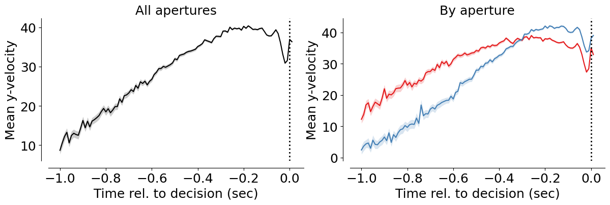
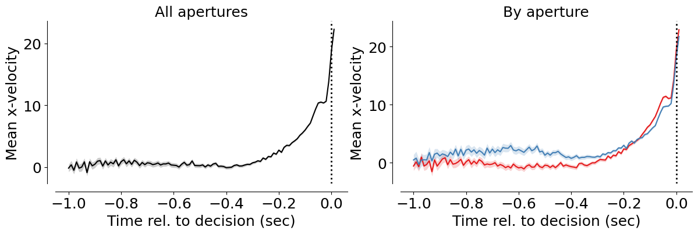
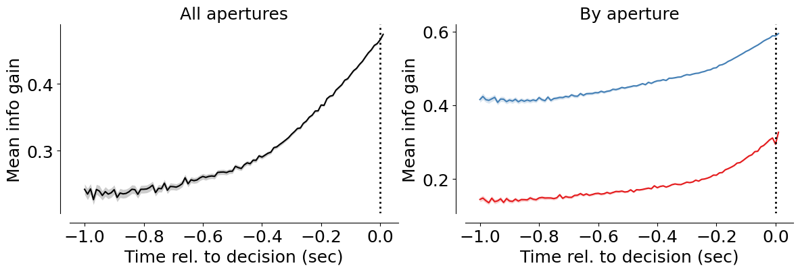
# Correlation between velocity and info gain (binned means)
vel_binned = binned_by_metric["velocity_y"]
info_binned = binned_by_metric["info_gain"]
corr_df = vel_binned.merge(
info_binned,
on=["aperture", "t_bin"],
suffixes=("_vel", "_info"),
)
corr_window = (-0.5, 0.0)
fig, ax = plt.subplots(1, 1, figsize=(8, 5))
divider = make_axes_locatable(ax)
apertures_sorted = sorted(corr_df.aperture.unique())[:2]
cmap_by_ap = {
apertures_sorted[0]: "Reds",
apertures_sorted[1]: "Blues",
}
for i, ap in enumerate(apertures_sorted):
# Full data for the scatter plot
ap_df = corr_df[corr_df.aperture == ap].dropna(subset=["mean_info", "mean_vel"])
if ap_df.empty:
continue
# Find the row with the maximum velocity for this aperture
max_row = ap_df.loc[ap_df["mean_vel"].idxmax()]
max_x = max_row["mean_info"]
max_y = max_row["mean_vel"]
max_time = max_row["t_bin"]
ax.scatter(max_x, max_y, marker='x', s=100, color='black',
zorder=10)
ax.annotate(
f"{max_time:.2f}",
xy=(max_x, max_y),
xytext=(5, 5),
textcoords='offset points',
fontsize=12,
)
# Subset data for Pearson Correlation and Regression
mask = (ap_df.t_bin >= corr_window[0]) & (ap_df.t_bin <= corr_window[1])
#mask = (ap_df.t_bin >= max_time) & (ap_df.t_bin <= 0)
stat_df = ap_df[mask]
if not stat_df.empty:
r_coeff, p_val = pearsonr(stat_df["mean_info"], stat_df["mean_vel"])
label_str = f"r={r_coeff:.2f}, p={p_val:.3f}"
# Plot regression line for the given window
slope, intercept = np.polyfit(stat_df["mean_info"], stat_df["mean_vel"], 1)
x_range = np.linspace(stat_df["mean_info"].min(), stat_df["mean_info"].max(), 10)
ax.plot(x_range, slope * x_range + intercept,
color=plt.get_cmap(cmap_by_ap[ap])(0.8), linewidth=2.5, zorder=5)
# Plot ALL scatter points
sc = ax.scatter(
ap_df["mean_info"],
ap_df["mean_vel"],
c=ap_df["t_bin"],
cmap=cmap_by_ap[ap],
s=40,
edgecolors="grey",
linewidths=0.6,
label=label_str,
alpha=0.8
)
# Handle Colorbars
cax = divider.append_axes("right", size="3%", pad=0.1 + (i * 0.9))
cbar = fig.colorbar(sc, cax=cax, shrink=True)
ax.set_xlabel("Information Content")
ax.set_ylabel("y-velocity")
leg = ax.legend(frameon=False)
for i, text in enumerate(leg.get_texts()):
ap_key = apertures_sorted[i]
text.set_color(plt.get_cmap(cmap_by_ap[ap_key])(0.8))
sns.despine(offset=10)
plt.tight_layout(pad=2.0)
plt.savefig(save_fig_path + "figure4_info_velocity_correlation_y.svg", transparent=True)
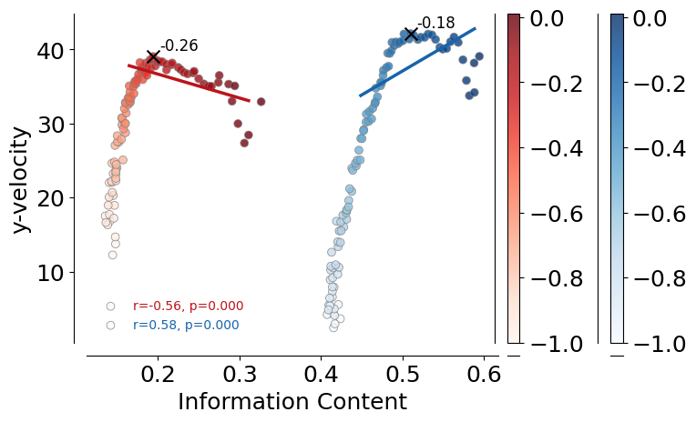
Information contained at decision point per condition#
interpolated_df = interpolated_df.sort_values(by=["mouse_name", "dataset"])
#interpolated_df["session_idx"] = interpolated_df.groupby(["mouse_name").cumcount() + 1
session_map = interpolated_df.groupby(["mouse_name", "dataset"]).ngroup()
interpolated_df["session_idx"] = interpolated_df.groupby("mouse_name")["dataset"].transform(lambda x: x.map({val: i+1 for i, val in enumerate(x.unique())}))
decision_points["trial_length"] = decision_points["trial_length"].astype(float)
# for each trial, get the initial position
initial_positions = interpolated_df.groupby(
["mouse_name", "dataset", "aperture", "trial"], as_index=False
).first()[["mouse_name", "dataset", "aperture", "trial", "x", "y"]]
# Get info at initial position
initial_positions["info_gain"] = initial_positions.apply(
lambda row: get_info_at_position(
info_matrices[0] if row.aperture == 4.3 else info_matrices[1],
(row.x, row.y),
),
axis=1,
)
# Decision point information available
info_at_decision_per_session = decision_points.groupby(["mouse_name", "dataset", "aperture"], as_index=False).mean(numeric_only=True)
info_at_decision_per_session = info_at_decision_per_session.rename(columns={None: "info_gain"})
info_at_decision_per_session["count"] = info_at_decision_per_session["info_gain"]
info_at_decision_per_session.aperture = info_at_decision_per_session.aperture.astype(float).round(2).astype(str)
info_at_decision_per_session = pd.DataFrame(info_at_decision_per_session.reset_index())
# Initial position information available
initial_positions = initial_positions.groupby(["mouse_name", "dataset", "aperture"], as_index=False)["info_gain"].mean()
initial_positions["count"] = initial_positions["info_gain"]
initial_positions.aperture = initial_positions.aperture.astype(float).round(2).astype(str)
initial_positions = pd.DataFrame(initial_positions.reset_index())
# Difference in information available
information_difference = info_at_decision_per_session.groupby(["mouse_name", "dataset", "aperture"], as_index=False)["info_gain"].mean()
information_difference["info_gain"] = information_difference["info_gain"] - initial_positions["info_gain"]
information_difference["count"] = information_difference["info_gain"]
information_difference = pd.DataFrame(information_difference.reset_index())
information_difference.aperture = information_difference.aperture.astype(float).round(2).astype(str)
fig, ax = plt.subplots(1, 3, figsize=(10, 5))
plotting._plot_bar_counts(
counts=initial_positions.sort_values("aperture", ascending=False),
label_x="aperture",
alpha=0.3,
ax=ax[0],
per_mouse=True,
cmap=plotting.colors_aperture[0:2],
)
ax[0].invert_xaxis()
ax[0].set_ylabel("Information Content rate")
ax[0].set_xlim(-0.5, 1.5)
ax[0].set_xticks([0, 1], ["Narrow", "Wide"])
ax[0].set_xlabel("Aperture")
ax[0].legend([], [], frameon=False)
sns.despine(offset=10, ax=ax[0])
plotting._plot_bar_counts(
counts=info_at_decision_per_session,
label_x="aperture",
alpha=0.3,
ax=ax[1],
per_mouse=True,
cmap=plotting.colors_aperture[0:2],
)
ax[1].invert_xaxis()
ax[1].set_ylabel("Information Content rate")
ax[1].set_xlim(-0.5, 1.5)
ax[1].set_xticks([0, 1], ["Narrow", "Wide"])
ax[1].set_xlabel("Aperture")
ax[1].legend([], [], frameon=False)
sns.despine(offset=10, ax=ax[1])
plotting._plot_bar_counts(
counts=information_difference.sort_values("aperture", ascending=False),
label_x="aperture",
alpha=0.3,
ax=ax[2],
per_mouse=True,
cmap=plotting.colors_aperture[0:2],
)
ax[2].invert_xaxis()
ax[2].set_ylabel("Information Gain")
ax[2].set_xlim(-0.5, 1.5)
ax[2].set_xticks([0, 1], ["Narrow", "Wide"])
ax[2].set_xlabel("Aperture")
ax[2].legend([], [], frameon=False)
sns.despine(offset=10, ax=ax[2])
ax[0].set_ylim(0.08, 0.68)
ax[1].set_ylim(0.08, 0.68)
plt.tight_layout(pad=2)
plt.savefig(
save_fig_path + "figure4_information_quantification.svg",
transparent=True,
)
for info, label in zip([initial_positions, info_at_decision_per_session, information_difference],
["Information at Initiation", "Information at Decision", "Information Difference"]):
print(label)
for i in info.aperture.unique():
for j in info.aperture.unique():
if i < j:
stat = stats.ttest_rel(
info[info["aperture"] == i]["count"],
info[info["aperture"] == j]["count"],
)
print(f"{i}-{j}: {stat}")
Information at Initiation
12.0-4.3: TtestResult(statistic=203.58890643063685, pvalue=1.5822172914976845e-64, df=42)
Information at Decision
12.0-4.3: TtestResult(statistic=39.61052982086955, pvalue=6.799318147850608e-35, df=42)
Information Difference
12.0-4.3: TtestResult(statistic=89.42607565873232, pvalue=1.471575700020202e-49, df=42)
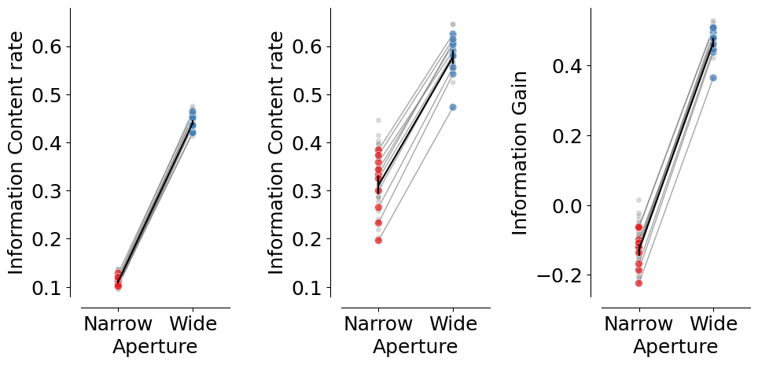
# Get mean + sem for all
for info, label in zip([initial_positions, info_at_decision_per_session, information_difference],
["Information at Initiation", "Information at Decision", "Information Difference"]):
print(label)
# round to 2 decimals
print(info.groupby("aperture")["count"].mean().round(3))
print(info.groupby("aperture")["count"].sem().round(3))
Information at Initiation
aperture
12.0 0.443
4.3 0.112
Name: count, dtype: float64
aperture
12.0 0.003
4.3 0.002
Name: count, dtype: float64
Information at Decision
aperture
12.0 0.588
4.3 0.326
Name: count, dtype: float64
aperture
12.0 0.005
4.3 0.009
Name: count, dtype: float64
Information Difference
aperture
12.0 0.477
4.3 -0.117
Name: count, dtype: float64
aperture
12.0 0.005
4.3 0.008
Name: count, dtype: float64
Distance to screen of the decision points per condition#
decision_points["y"] = decision_points["y"].astype(float)
decision_points["distance_to_screen"] = np.abs(decision_points["y"] - 27)
fig, ax = plt.subplots(1, 1, figsize=(3, 5))
counts, stats_mean = plotting.pairplot_average_decision_point(
decision_points,
label_parameter="distance_to_screen",
ax=ax,
cmap=plotting.colors_aperture,
per_mouse=True,
)
ax.set_xlim(-0.5, 1.5)
ax.set_ylim(0, 28)
ax.set_xlabel("Occlusion")
ax.set_xticks([0, 1], ["Narrow", "Wide"])
ax.set_ylabel("Distance to screen (cm)")
sns.despine(offset=10)
plt.legend([], [], frameon=False)
plt.savefig(
save_fig_path + "figure4_decision_points_distance.svg",
transparent=True,
)
mean: 12.945713638388412 +/- 0.42075972895108993
12.0-4.3: TtestResult(statistic=6.355253690057035, pvalue=1.2238950358981805e-07, df=42)
mean difference: -3.6707149152692224
mean: 16.616428553657634 +/- 0.35825944591851416
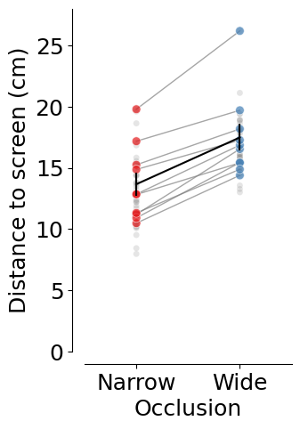
decision_points["lab_id"] = 0
for dataset_name in sessions_list:
# Fetch lab_id for each dataset
decision_points.loc[decision_points.dataset==dataset_name, "lab_id"] = ((vr4mice.Collab() & f'dataset = "{dataset_name}"') * vr4mice.Labs()).fetch("lab")[0]
fig, ax = plt.subplots(1, 1, figsize=(3, 5))
stats_mean = plotting.pairplot_average_decision_point(
decision_points,
label_parameter="y",
ax=ax,
cmap=plotting.colors_aperture,
per_lab=True,
)
ax.set_xlim(-0.5, 1.5)
ax.set_ylim(0, 28)
ax.set_xlabel("Occlusion")
ax.set_xticks([0, 1], ["Narrow", "Wide"])
ax.set_ylabel("Distance to screen (cm)")
sns.despine(offset=10)
plt.legend([], [], frameon=False)
plt.savefig(
save_fig_path + "figure4_decision_points_distance_per_lab.svg",
transparent=True,
)
mean: 14.054286361612208 +/- 0.42075972895114894
12.0-4.3: TtestResult(statistic=-12.864675228967217, pvalue=3.6747680032927093e-16, df=42)
mean difference: 3.6707149152698424
mean: 10.383571446342366 +/- 0.35825944591851416
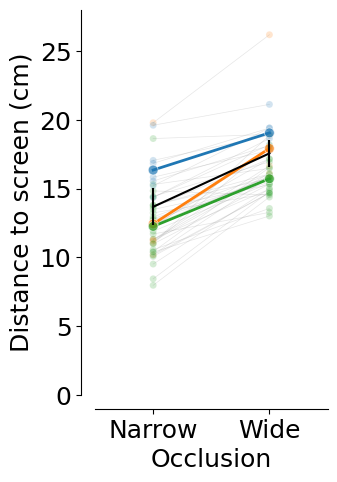
decision_points_stats = decision_points.groupby(["dataset", "aperture"], as_index=False)[
"y"
].mean()
anova_rm = AnovaRM(decision_points_stats, depvar="y", subject="dataset", within=["aperture"])
anova_results = anova_rm.fit()
anova_table = anova_results.summary()
print(anova_table)
Anova
=======================================
F Value Num DF Den DF Pr > F
---------------------------------------
aperture 165.4999 1.0000 42.0000 0.0000
=======================================
decision_points.groupby("aperture").y.mean(), decision_points.groupby("aperture").y.sem()
(aperture
4.3 14.189555
12.0 10.736870
Name: y, dtype: float64,
aperture
4.3 0.087201
12.0 0.087109
Name: y, dtype: float64)
Relate decision point position to reward rate#
mean_decision_points = decision_points.groupby(["dataset", "aperture"], as_index=False).mean(numeric_only=True)
# get first and last quintile of decision points, per dataset
first_quintiles = mean_decision_points[mean_decision_points.aperture==4.3]['y'].quantile(0.2)
last_quintiles = mean_decision_points[mean_decision_points.aperture==4.3]['y'].quantile(0.8)
# get the dfs before q1 and after q3
before_q1 = mean_decision_points[(mean_decision_points.aperture==4.3) & (mean_decision_points['y'] < first_quintiles)] #furthest from screen
after_q3 = mean_decision_points[(mean_decision_points.aperture==4.3) & (mean_decision_points['y'] > last_quintiles)] #closest to screen
# add column for mouse name
before_q1["mouse_name"] = before_q1.dataset.str.split("_").str [0]
after_q3["mouse_name"] = after_q3.dataset.str.split("_").str [0]
/tmp/ipykernel_3229955/2084882542.py:10: SettingWithCopyWarning:
A value is trying to be set on a copy of a slice from a DataFrame.
Try using .loc[row_indexer,col_indexer] = value instead
See the caveats in the documentation: https://pandas.pydata.org/pandas-docs/stable/user_guide/indexing.html#returning-a-view-versus-a-copy
before_q1["mouse_name"] = before_q1.dataset.str.split("_").str [0]
/tmp/ipykernel_3229955/2084882542.py:11: SettingWithCopyWarning:
A value is trying to be set on a copy of a slice from a DataFrame.
Try using .loc[row_indexer,col_indexer] = value instead
See the caveats in the documentation: https://pandas.pydata.org/pandas-docs/stable/user_guide/indexing.html#returning-a-view-versus-a-copy
after_q3["mouse_name"] = after_q3.dataset.str.split("_").str [0]
before_q1.mouse_name.unique(), after_q3.mouse_name.unique()
(array(['31726', '31728', 'J731', 'Pheasant'], dtype=object),
array(['J729', 'Jacana', 'Lemming', 'Nightingale', 'Oribi'], dtype=object))
before_q1.dataset.nunique(), after_q3.dataset.nunique()
(9, 9)
# get reward rate
trial_df = (TrialMetrics() * vr4mice.Groups() * vr4mice.Labels() * (vr4mice.Dataset() & 'session_label = "ar_discrim_occluders"')).fetch(as_dict=True)
trial_df = pd.concat([pd.DataFrame(x) for x in trial_df])
# Exclude sessions that were not in the list
trial_df, reward_table = utils.apply_inclusion_criteria(trial_df,
return_excluded=False)
# Create list of included datasets
mouse_list = trial_df.dataset.unique()
trial_df["mouse_name"] = trial_df.dataset.str.split("_").str [0]
trial_df["lab_id"] = 0
for dataset_name in mouse_list:
# Fetch lab_id for each dataset
trial_df.loc[trial_df.dataset==dataset_name, "lab_id"] = ((vr4mice.Collab() & f'dataset = "{dataset_name}"') * vr4mice.Labs()).fetch("lab")[0]
# plot the lower and upper quartile reward rate for only the sessions in the quartiles
fig, ax = plt.subplots(1, 2, figsize=(7, 5))
counts = plotting.plot_rate(
df=trial_df[trial_df.mouse_name.isin(before_q1.mouse_name.unique().tolist())],
label_x="trial_rewarded",
per_aperture=True,
ax=ax[0],
cmap=plotting.colors_aperture[0:2],
per_mouse=True,
)
ax[0].hlines(
0.5,
xmin=-0.25,
xmax=len(trial_df.aperture.unique()) - 0.75,
linestyles="dashed",
colors="black",
)
ax[0].set_ylim(0, 1.0)
ax[0].set_xlim(-0.5, 1.5)
ax[0].set_ylabel("Success rate / Mouse")
ax[0].set_xlabel("Aperture")
ax[0].set_xticks([0, 1], ["Narrow", "Wide"])
sns.despine(offset=10, ax=ax[0])
ax[0].legend([], [], frameon=False)
ax[0].set_title(f"Furthest from screen\n(n={counts.mouse_name.nunique()})")
counts2 = plotting.plot_rate(
df=trial_df[trial_df.mouse_name.isin(after_q3.mouse_name.unique().tolist())],
label_x="trial_rewarded",
per_aperture=True,
ax=ax[1],
cmap=plotting.colors_aperture[0:2],
per_mouse=True,
)
ax[1].hlines(
0.5,
xmin=-0.25,
xmax=len(trial_df.aperture.unique()) - 0.75,
linestyles="dashed",
colors="black",
)
ax[1].set_ylim(0, 1.0)
ax[1].set_xlim(-0.5, 1.5)
ax[1].set_ylabel("Success rate / Mouse")
ax[1].set_xlabel("Aperture")
ax[1].set_xticks([0, 1], ["Narrow", "Wide"])
sns.despine(offset=10, ax=ax[1])
ax[1].legend([], [], frameon=False)
ax[1].set_title(f"Closest to screen\n(n={counts2.mouse_name.nunique()})")
plt.savefig(save_fig_path + "figure4_trial_reward_groups.svg", transparent=True)
plt.tight_layout(pad=2)
4.3: mean=0.703 ± 0.017
12.0-4.3: TtestResult(statistic=8.620578958360586, pvalue=1.7358583683875294e-06, df=12)
12.0: mean=0.867 ± 0.016
4.3: mean=0.795 ± 0.019
12.0-4.3: TtestResult(statistic=4.4700285565646976, pvalue=0.00015984419487565023, df=24)
12.0: mean=0.884 ± 0.011
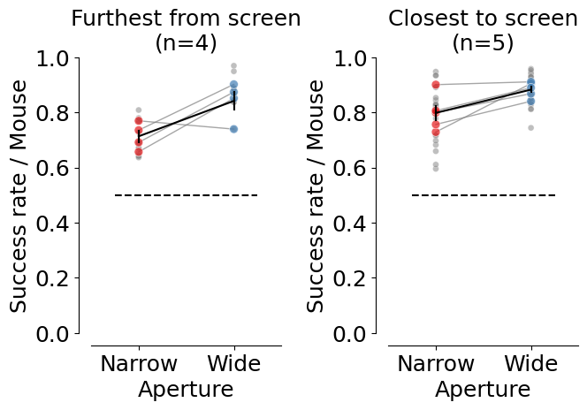
# stats difference between groups
stats_res = ttest_ind(
counts[counts.aperture=="4.3"]["count"],
counts2[counts2.aperture=="4.3"]["count"]
)
print("narrow", stats_res)
stats_res = ttest_ind(
counts[counts.aperture=="12.0"]["count"],
counts2[counts2.aperture=="12.0"]["count"]
)
print("wide", stats_res)
narrow TtestResult(statistic=-3.147714204607385, pvalue=0.003299150380735476, df=36.0)
wide TtestResult(statistic=-0.8951141071836514, pvalue=0.37667219573341515, df=36.0)
Investigating first test session#
interpolated_df["date"] = pd.to_datetime(interpolated_df["dataset"].str.split("_").str[1])
interpolated_df.sort_values(by=["mouse_name", "date"], inplace=True)
import copy
temp_interpolated_df = copy.deepcopy(interpolated_df)
temp_interpolated_df = temp_interpolated_df[temp_interpolated_df.mouse_name != "J731"]
temp_interpolated_df["y"] = temp_interpolated_df["y"]
first_datasets = temp_interpolated_df[(temp_interpolated_df.trial == 20) & (temp_interpolated_df.trial_length == 0.0)].groupby('mouse_name').first()["dataset"]
second_datasets = temp_interpolated_df[(temp_interpolated_df.trial == 20) & (temp_interpolated_df.trial_length == 0.0)].groupby('mouse_name').apply(lambda x: x.iloc[1])["dataset"]
# and for decision points
first_decision_points = decision_points[decision_points.dataset.isin(first_datasets)]
#first_decision_points = first_decision_points[~first_decision_points.mouse_name.isin(["J731"])]
fig, ax = plt.subplots(2, 1, figsize=(6, 4), sharex=True)
window_size = 15
n_trials = 200
for aperture, color in zip([4.3, 12], plotting.colors_aperture):
plotting.plot_mouse_trial_lineplot(first_decision_points[(first_decision_points.aperture==aperture) & (first_decision_points.trial <= n_trials)],
"trial_rewarded",
ax=ax[0],
rolling_window=window_size,
color=color,
normalize=False)
plotting.plot_mouse_trial_lineplot(first_decision_points[(first_decision_points.aperture==aperture) & (first_decision_points.trial <= n_trials)],
"distance_to_screen",
ax=ax[1],
rolling_window=window_size,
color=color,
normalize=False)
ax[0].set_title("")
ax[1].set_title("")
ax[0].set_xlabel("")
ax[0].set_ylabel("Success\nRate")
ax[1].set_ylabel("Distance\nto screen (cm)")
for ax in ax.flatten():
sns.despine(offset=10, ax=ax)
plt.savefig(save_fig_path + "figure4_first_session.svg", transparent=True, bbox_inches="tight")
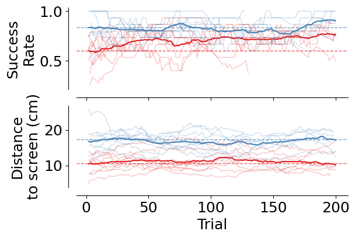
Decision point distance to screen vs. reward rate across successful and less successful sessions#
Including sessions with the narrow-wide difference in reward rate > 0.25
trial_df_all = (TrialMetrics() * vr4mice.Groups() * vr4mice.Labels() * (vr4mice.Dataset() & 'session_label = "ar_discrim_occluders"')).fetch(as_dict=True)
trial_df_all = pd.concat([pd.DataFrame(x) for x in trial_df_all])
# Exclude sessions that were not in the list
trial_df_all, reward_table = utils.apply_inclusion_criteria(trial_df_all,
return_excluded=False,
consider_reward_drop=False)
# Create list of included datasets
sessions_list_all = trial_df_all.dataset.unique()
trial_df_all["mouse_name"] = trial_df_all.dataset.str.split("_").str[0]
dataset_list_all = []
for d in sessions_list_all:
print(d)
try:
if len(InterpolatedTrials() & f'dataset = "{d}"') > 0:
dataset_list_all.append(pd.DataFrame((InterpolatedTrials() & f'dataset = "{d}"').fetch(as_dict=True)[0]))
else:
print("dataset missing")
except Exception as err:
print(err, " dataset missing")
interpolated_df_all = pd.concat(dataset_list_all)
interpolated_df_all["mouse_name"] = interpolated_df_all.dataset.str.split("_").str [0]
31726_2025-03-18_1
31726_2025-03-19_1
31726_2025-03-20_1
31726_2025-03-21_1
31728_2025-03-05_1
31728_2025-03-06_1
31728_2025-03-07_1
31728_2025-03-20_1
31728_2025-03-21_1
J729_2024-11-30_1
J729_2024-12-01_1
J729_2024-12-02_1
J729_2024-12-03_1
J729_2024-12-04_1
J729_2024-12-10_1
J731_2024-12-05_1
J731_2024-12-09_1
Jacana_2024-08-13_1
Jacana_2024-08-14_1
Jacana_2024-08-15_1
Jacana_2024-08-16_1
Jacana_2024-08-19_1
Kiwi_2024-08-10_2
Kiwi_2024-08-11_4
Kiwi_2024-08-12_2
Kiwi_2024-08-13_1
Kiwi_2024-08-14_1
Lemming_2024-08-10_1
Lemming_2024-08-11_1
Lemming_2024-08-12_1
Lemming_2024-08-13_1
Nightingale_2024-08-10_1
Nightingale_2024-08-11_1
Nightingale_2024-08-12_1
Nightingale_2024-08-13_1
Nightingale_2024-08-14_1
Oribi_2024-08-16_1
Oribi_2024-08-19_1
Oribi_2024-08-20_1
Oribi_2024-08-21_1
Oribi_2024-08-22_1
Pheasant_2024-08-15_2
Pheasant_2024-08-16_1
Pheasant_2024-08-19_1
Pheasant_2024-08-20_1
Pheasant_2024-08-21_1
interpolated_df_all.dataset.nunique(), interpolated_df_all.mouse_name.nunique()
(46, 10)
model_labels, clean_labels, label_set_name = (
LabelSet.Member * Label * LabelSet & f"label_set_id='8'").fetch(
"label_key", "clean_name", "label_set_name")
interpolated_df_all["aperture"] = interpolated_df_all["aperture"].astype(float)
df_model_all, coef = regression.predict_decision(
df=interpolated_df_all, label=model_labels, per_mouse=True
)
decision_points_all = regression.find_decision_point(df_model_all,
threshold_uncertainty=0.2)
fig, ax = plt.subplots(1, 1, figsize=(3, 5))
for aperture, color, ypos in zip(decision_points_all.sort_values("aperture").aperture.unique(),
plotting.colors_aperture,
[0.10, 0.05]):
x = abs(decision_points_all[decision_points_all.aperture==aperture].groupby(
"mouse_name")["y"].mean().values - 27)
y = trial_df_all[(trial_df_all.aperture==aperture)].groupby(
"mouse_name")["trial_rewarded"].mean().values
# scatter
ax.scatter(
x, y,
color=color,
alpha=0.7,
s=50
)
# regression line
slope, intercept, r_value, p_value, std_err = stats.linregress(x, y)
x_fit = np.linspace(x.min(), x.max(), 100)
y_fit = slope * x_fit + intercept
ax.plot(x_fit, y_fit, color=color, linestyle="--")
print(f"Aperture {aperture}: r={r_value}, p={p_value}")
# annotate correlation
ax.text(
0.05, ypos,
f"r = {r_value:.2f}, p = {p_value:.3g}",
transform=ax.transAxes,
va="top", ha="left",
color=color
)
ax.set_xlabel("Distance to screen (cm)")
ax.set_ylabel("Success rate")
ax.set_ylim(0, 1.0)
sns.despine(offset=10, ax=ax)
plt.savefig(save_fig_path + "figure4_decision_point_vs_performance.svg", transparent=True)
Aperture 4.3: r=-0.7057843864945809, p=0.022567528924541
Aperture 12.0: r=-0.266999421524306, p=0.4558250085749076
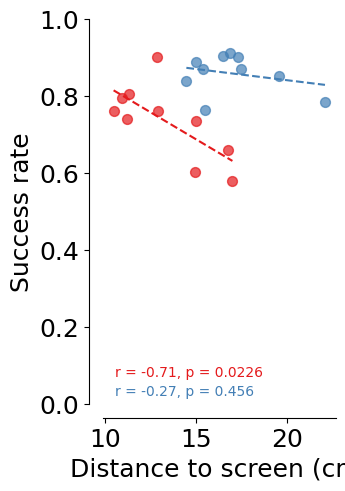